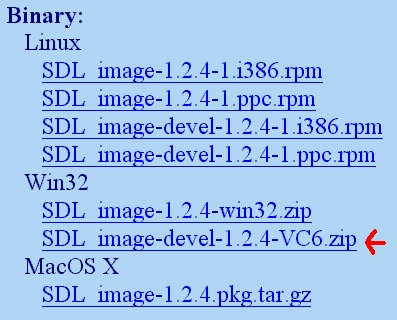
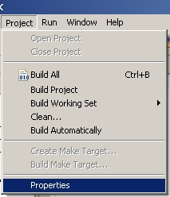
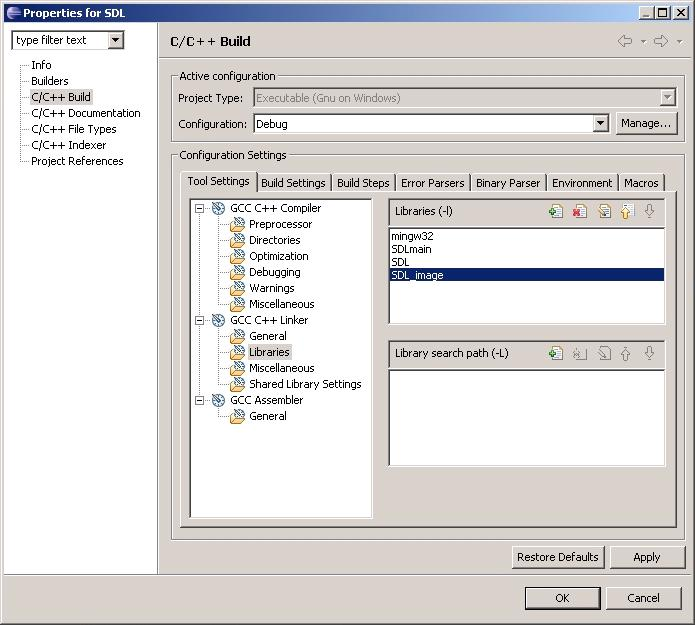

Setting up SDL Extension Libraries in Eclipse
Last Updated 2/18/12
In this tutorial you're going to learn to set up SDL_image. If you know how to set up this extension, you can set any of them up.SDL_image is located on this page.
1)Scroll down to the Binary section and download the Windows development library
Every extension libary has 3 essential parts:
Open up the zip archive and there should be a folder inside.
Open the folder and it'll contain 2 subfolders.
2)First, open the include subfolder in the archive and extract the header file inside to the SDL subfolder inside of the MinGW include folder. It should be at C:\MinGW\include\SDL.
3) Now find the lib folder from the archive. Take the library file(s) from the archive and put them with the rest of the SDL library files. The MinGW lib folder should be at C:\MinGW\lib.
For certain versions of SDL_image, there will be a x86 folder and a x64 folder inside of the lib folder from the archive. The x86 folder contains the 32bit *.lib files and the x64 bit folder contains the 64bit versions of the library files. If you're compiling a 32bit program, copy the library file(s) from the x86 folder and if you're compiling a 64bit version copy the library file(s) from the x64 folder. By default most compilers compile in 32bit so if you're not sure how you're compiling, try the 32bit libraries first. What matters here is not whether you have 32/64bit windows, but what type of program you're compiling.
If you don't see a x86 or x64 folder inside of the lib directory from the archive, just copy the library file(s) from the lib folder from the archive.
4)Now extract all of the *.dll file(s) from the archive and put them in the same directory as your exe.
Like before, you can copy them to C:\WINDOWS\SYSTEM32 (or C:\Windows\SysWOW64 on 64bit Windows) so your SDL app will find the *.dll(s) even if they're not in the same directory. The problem with this method is if you have multiple SDL apps that use different versions of SDL, you'll have version conflicts. If you have an old version in SYSTEM32 when the app uses the new version you're going to run into problems. Generally you want to have your the *.dll(s) in the same directory as your executable developing and you'll always want to have *.dll(s) in the same directory as the exe when distributing your app.
5)Now open up your SDL project and go to the project properties.
6)In the libraries section add in:
If you were linking SDL_ttf you'd put
7)To use SDL_image make sure to include the header file.

Every extension libary has 3 essential parts:
- The header file.
- The lib file.
- The *.dll file(s)
Open up the zip archive and there should be a folder inside.
Open the folder and it'll contain 2 subfolders.
2)First, open the include subfolder in the archive and extract the header file inside to the SDL subfolder inside of the MinGW include folder. It should be at C:\MinGW\include\SDL.
3) Now find the lib folder from the archive. Take the library file(s) from the archive and put them with the rest of the SDL library files. The MinGW lib folder should be at C:\MinGW\lib.
For certain versions of SDL_image, there will be a x86 folder and a x64 folder inside of the lib folder from the archive. The x86 folder contains the 32bit *.lib files and the x64 bit folder contains the 64bit versions of the library files. If you're compiling a 32bit program, copy the library file(s) from the x86 folder and if you're compiling a 64bit version copy the library file(s) from the x64 folder. By default most compilers compile in 32bit so if you're not sure how you're compiling, try the 32bit libraries first. What matters here is not whether you have 32/64bit windows, but what type of program you're compiling.
If you don't see a x86 or x64 folder inside of the lib directory from the archive, just copy the library file(s) from the lib folder from the archive.
4)Now extract all of the *.dll file(s) from the archive and put them in the same directory as your exe.
Like before, you can copy them to C:\WINDOWS\SYSTEM32 (or C:\Windows\SysWOW64 on 64bit Windows) so your SDL app will find the *.dll(s) even if they're not in the same directory. The problem with this method is if you have multiple SDL apps that use different versions of SDL, you'll have version conflicts. If you have an old version in SYSTEM32 when the app uses the new version you're going to run into problems. Generally you want to have your the *.dll(s) in the same directory as your executable developing and you'll always want to have *.dll(s) in the same directory as the exe when distributing your app.
5)Now open up your SDL project and go to the project properties.

6)In the libraries section add in:
SDL_image
after mingw32, SDLmain, and SDL.
If you were linking SDL_ttf you'd put
SDL_ttf
if you were linking SDL_mixer you'd putSDL_mixer
etc, etc.7)To use SDL_image make sure to include the header file.
#include "SDL/SDL_image.h"
If you were setting up SDL_ttf you'd put
Now the extension library is all set up.
#include "SDL/SDL_ttf.h"
If you were setting up SDL_mixer you'd put#include "SDL/SDL_mixer.h"
etc, etc.Now the extension library is all set up.
Now you can use SDL_image functions.
The main one you want to know about is IMG_Load().
The main one you want to know about is IMG_Load().
SDL_Surface *load_image( std::string filename )
{
//The image that's loaded
SDL_Surface* loadedImage = NULL;
//The optimized image that will be used
SDL_Surface* optimizedImage = NULL;
//Load the image using SDL_image
loadedImage = IMG_Load( filename.c_str() );
//If the image loaded
if( loadedImage != NULL )
{
//Create an optimized image
optimizedImage = SDL_DisplayFormat( loadedImage );
//Free the old image
SDL_FreeSurface( loadedImage );
}
//Return the optimized image
return optimizedImage;
}
Here is a revised version of the image loading function from the previous tutorial.
As you can see IMG_Load() functions exactly the same as SDL_LoadBMP(), but there's one big exception:
IMG_Load() can load BMP, PNM, XPM, LBM, PCX, GIF, JPEG, TGA and PNG files.
From this tutorial on, PNG image files will be the primary image format used. PNGs have excellent lossless compression.
From this tutorial on, PNG image files will be the primary image format used. PNGs have excellent lossless compression.